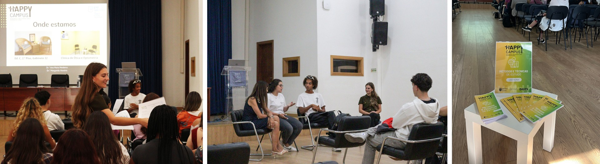

Projeto Happy Campus dinamiza uma semana de integração aos novos alunos
Para começar o ano letivo com o pé direito, o ISEC Lisboa, no âmbito do projeto Happy Campus – Saúde Mental e Bem-estar do Campus Académico do Lumiar, criou uma semana, de 17 a 27 de setembro, dedicada às várias áreas académicas, de modo a facilitar a integração académica dos novos alunos.
O dia 23 de setembro foi inteiramente dedicado à saúde mental e ao bem-estar. O dia começou com palestra intitulada “Integração: Como é ser aluno/a do Ensino Superior no ISEC Lisboa?” conduzida pela Dra. Ana Maria Medeiros, responsável pelo Gabinete de Integração Académica e Apoio ao Estudante (GIAAE), com a participação do Presidente da Associação Académica do ISEC Lisboa, Bruno Sena.
Seguiu-se a apresentação de alguns dos serviços do ISEC Lisboa, o Gabinete de Inserção Profissional e o Gabinete de Apoio Psicológico, que conta com quatro profissionais, Dr.ª Ana Maria Medeiros e Dr.ª Sandra Almeida, psicólogas, Dr.ª Margarida Honório, Psicóloga Junior e com uma Médica Psiquiatra, Dr.ª Ana Peixinho que dedicam a sua atividade a sessões de acompanhamento psicológico tendo em vista a promoção do desenvolvimento pessoal, académico e profissional dos alunos, docentes e funcionários.
A sessão da tarde continuou com o workshop “Métodos e Técnicas de Estudo” que tinha como missão dotar os estudantes de ferramentas essenciais para o seu sucesso escolar. Dicas como a leitura ativa, testes práticos, grupos de estudo ou até o método de estudo de Pomodoro são alguns dos conselhos disponíveis no flyer Métodos e Técnicas de Estudo disponível AQUI. O workshop contou ainda com os testemunhos de dois estudantes do ISEC Lisboa sobre a sua metodologia aplicada nos seus estudos, Mariana Delgado do 2.º ano do CTeSP de Gestão Financeira e Contabilidade e Daniel Rey, aluno do 3.º ano de Licenciatura em Educação Básica, que soma mais de 6000 mil seguidores nas suas redes sociais com a página “Rey da Matemática”, uma conta totalmente dedicada aos métodos e técnicas de estudo para a matemática.